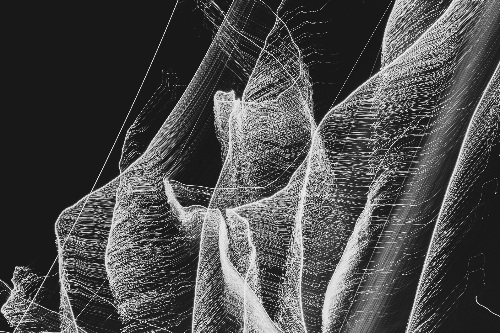

Introduction to Musical Corpus Studies¶
{kind=link}
Warning
This material is still (heavily) under construction and might change throughout the course!
You can help improving the course and let me know about any errors and inconsistencies that you find or suggest other ways of improving the course.
Welcome!
These pages present the content of the course “Introduction to Musical Corpus Studies” at the Institute of Musicology, given at University of Cologne in Fall 2020.
In the last two decades Musical Corpus Studies evolved from a niche discipline into a veritable research area. The growing availability of digital and digitized musical data as well as the application and development of modern methodologies from computer science, machine learning, and data science cast new light on old musicological questions and generate entirely novel approaches to empirical music research.
Moreover, the general methodological and epistemological approach of Musical Corpus Studies allows to transcend traditional intra-musicological boundaries between its sub-disciplintes (historical/systematic/ethnological/…) without sacrificing the respective specific viewpoints and perspectives.
This course offers a fundamental and practical introduction into these topics. It demonstrates, explores, and critically reflects central thematic areas and methods by means of a number of case studies. In the engagement with these topics the course also introduces elementary methods from natural language and music processing, as well as statistics, data analysis and visualization.
The course is aimed at students at the undergraduate level who have little or no empirical background and are curious about quantitative approaches to musicology.
Note
A PDF version of the course material can be downloaded here: pdf